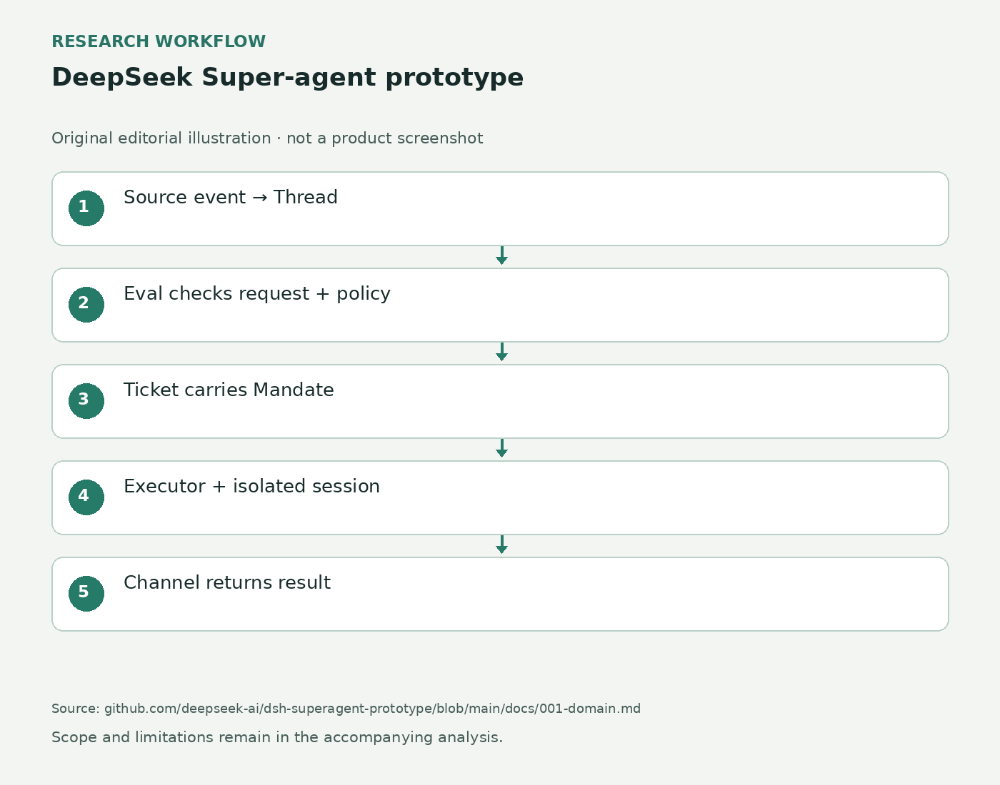

DeepSeek Super-agent prototype · 开源 · 研究原型
DeepSeek把仓库事件分派为独立任务，补充消息不会自动扩大权限
2026-10-31 · · 采集 11-01 09:15Z

根据官方领域模型绘制的编辑架构示意；不是产品界面或实测画面。 ↗ 原始图证从原来的讨论发起工作
这个原型把一个GitHub仓库作为工作边界。团队在GitHub，或接入后在飞书里提出请求，系统先判断谁发起、是否在允许范围内，再为需要执行的事项建立独立任务。任务有自己的代理会话与目录，完成后沿原对话返回结果，例如一个拉取请求。这样用户不用先创建另一个聊天窗口，再把上下文和结果搬回讨论。README特别强调，原型经过公开发布整理，并不等同内部版本，设计文章中的一些方向也尚未实现。因此自动发现问题、持续自主协作等宏观愿景，必须逐项对应已公开的任务流程，不能直接当作可用功能清单。
让一项工作有自己的状态
领域文档把事件、讨论线程、是否接单的判断、任务及执行分开记录。来源产生的事件先进入对应线程；已订阅该线程的任务收到补充上下文，其他事件才进入接单判断。接受任务时附带明确的授权范围，再交给执行器；回报经原渠道发出。相同事件再次被接受只创建一个任务，来源保存读取位置，避免重启后把旧消息重复当新工作。对维护者而言，这些设计解决的是“这条回复到底属于哪一件事”的追踪问题。它并不能代替对补丁内容的审核，但能让重试、追加说明和结果回传围绕同一个任务身份展开，而不是靠人记住若干聊天窗口。
上下文不会自动变成权限
权限文档将消息内容与可执行范围分开。主机侧执行允许名单、规则和任务授权；评论、引用文档以及工具返回的内容只是判断输入，不能改写这些权限。允许的人明确点名代理可以发起工作，机器人事件则只可能成为待判断的候选。已经订阅的线程会把消息继续送到任务，包括CI和机器人消息，但这种送达本身不给新权限。这个区别对多人仓库尤其具体：别人补一段日志，不等于同意代理改动所有模块。操作者需要把规则写清，并检查任务是否正确理解了请求。公开文档提供的是实现约束说明，不是已经证明可抵挡一切错误输入的安全认证。
把人的注意力放到待办上
Web侧栏中的Superagent面板按需要介入的工作、系统健康、单项工作历史安排阅读顺序。Overview列出待处理任务与系统问题；Execution区分等待、工作中和已结束等状态，任务详情能追到触发事件、判断理由、授权及后续输入。失败的信息交付或报告可以重试，结束项显示合并或人为停止等结果。缺少仓库或账户设置时，面板会指出缺项。它让运维者不必逐个进入会话找卡点，但前提是部署和接入本身正确。项目以MIT许可公开，作者要求使用前检查和改造，明确仍可能有缺陷；此次没有独立安装、持续运行或真实团队任务完成率数据。
← 回到项目，继续翻页